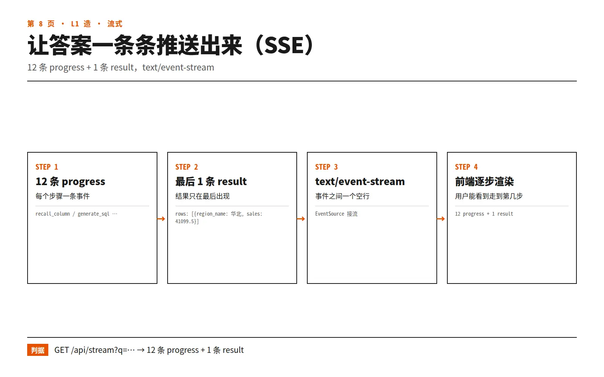
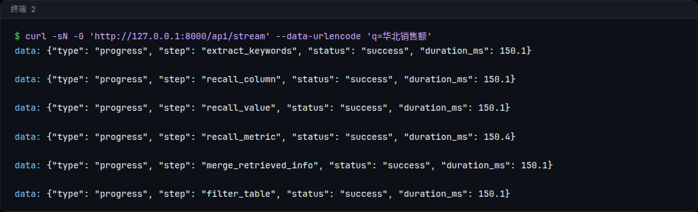
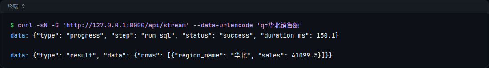
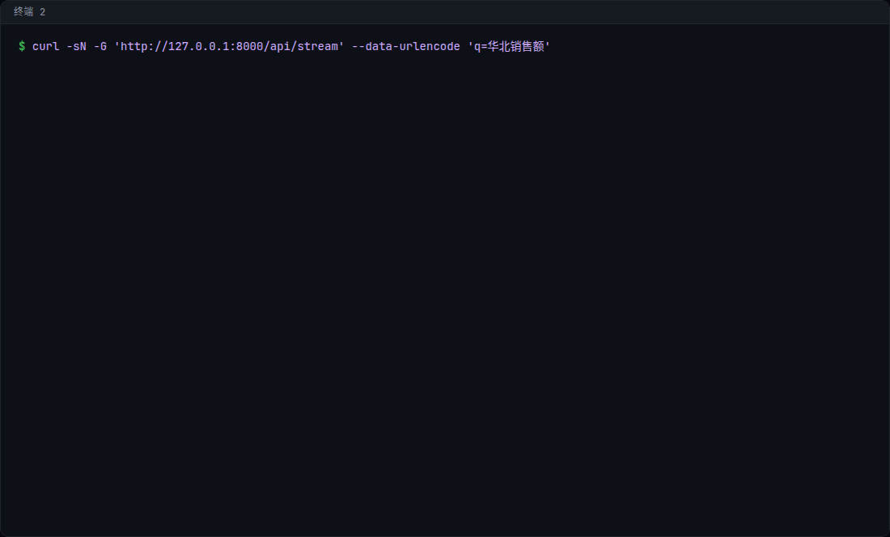

练本 · 阅读版（md 正典派生，改内容请改 manual/page-08.md）
第 8 页 · 让答案一条条推送出来（SSE）
城市坐标 · P8 传送带（交付物 ⑩）｜把取到的货一条条传回窗口：不再是砸一坨，而是 12 条
progress边走边报。前置：第 0 页备好环境；本页接第 7 页留下的 lab/app.py 与 8000 端口的服务。
这一页构建什么
同一个服务再加一条流式通道 GET /api/stream?q=...：把一次查询拆成 12 条 progress 事件（每个步骤一条），最后再发 1 条 result，内容类型是 text/event-stream。
旧入口不动：第 7 页的 POST /api/query 保留不动——一个“憋到最后一次给”，一个“干一步报一步”，你正好对照。
步骤名有出处：这 12 个步骤名不是现编的，contracts/steps.yaml 里就声明了这 12 个节点。

猜一猜
动手前写下答案：
用 curl 打这条流，12 条 progress 会一起冒出来，还是隔一小段冒一条（这里“冒”就是服务端逐条推送，SSE）？
从第一条到最后那条 result，整条流大概要几秒？最后 result 里的 sales 还是 41099.5 吗？
动手
还是改 lab/app.py，两处。改完先按 Ctrl+S 保存再重启；不保存就重启，/api/stream 还是第 7 页的旧代码（症状见「对账」）。
- 在文件开头的 import 区加三行：
import json
import time
from fastapi.responses import StreamingResponse
- 把下面这段接在
@app.post("/api/query")那个函数之后、if __name__ == "__main__":那 2 行之前——__main__块永远是文件最后一块：
STEPS = ["extract_keywords", "recall_column", "recall_value", "recall_metric",
"merge_retrieved_info", "filter_table", "filter_metric", "add_extra_context",
"generate_sql", "validate_sql", "correct_sql", "run_sql"]
def sse(event: dict) -> str:
return f"data: {json.dumps(event, ensure_ascii=False)}\n\n"
@app.get("/api/stream")
def stream(q: str):
def gen():
for step in STEPS:
t0 = time.perf_counter()
time.sleep(0.15) # 假装在干活，让你肉眼看到一条条到
yield sse({"type": "progress", "step": step, "status": "success",
"duration_ms": round((time.perf_counter() - t0) * 1000, 1)})
rows = run_sql(build_sql(extract_keywords(q)))
yield sse({"type": "result", "data": {"rows": rows}})
return StreamingResponse(gen(), media_type="text/event-stream")
重启：Ctrl+C 停服务，再用你第 3 页实际用的那条启动命令重启（端口按你实际改过的；下面 curl 里的 8000 同理）。
然后打这条流：
curl -sN -G 'http://127.0.0.1:8000/api/stream' --data-urlencode 'q=华北销售额'
-N 是“别攒”：收到一条就画一条。
-G 加 --data-urlencode：让 curl 先把中文编码，再放进查询参数。
别直接写 ?q=华北销售额：curl 会把中文原样发出去，uvicorn 只回一句 Invalid HTTP request received.（你可以试一次，再改回来）。
你应该看到
data: {"type": "progress", "step": "extract_keywords", "status": "success", "duration_ms": 150.1}
data: {"type": "progress", "step": "recall_column", "status": "success", "duration_ms": 150.1}
…（同样形状共 12 条，最后一条是 run_sql；每条之间还有一个空行）
data: {"type": "result", "data": {"rows": [{"region_name": "华北", "sales": 41099.5}]}}



对账
- 你猜一起还是一条条？一条条，每条之间约 0.15 秒：
gen()每yield一条之前都time.sleep(0.15)。 - 总时长：12 条走完约 1.8 秒，最后才执行 SQL、发
result。实测整条流 1.8 秒左右。 duration_ms是量出来的，不是写死的：t0 = time.perf_counter()记开始，发事件前再量一次、相减、取整到 0.1 毫秒，所以是150.1这种数。- 试一下：把
time.sleep删掉，它会掉到 0 附近。 data:前缀加末尾空行是 SSE 的格式：一个事件 = 一行data: ...+ 一个空行。浏览器（第 9 页）就靠空行切事件。ensure_ascii=False：让中文原样输出，不变成\u534e\u5317这种转义。result里的rows和第 7 页 POST 返回的一模一样（41099.5）：流式只改“什么时候给你”，不改“给你什么”。- 为什么不把 POST 改成流式：第 7 页那种“只要最终值”的调用还得留着当对照；浏览器那边
EventSource只能发 GET，所以流式入口用GET+ 查询参数。 - 两条入口共用同一个
run_sql。 - 404 = 没保存 / 上一页没生效：重启后
GET /api/stream回{"detail":"Not Found"}、/health却正常，说明stream那段没进内存——多半是改完没 Ctrl+S 就重启，跑的仍是第 7 页代码。 - 修法：保存后再重启一次。
- 真实契约里
result还带columns（字段名和类型，画表格要用），见contracts/sse.schema.json；这一页只发rows，够第 9 页用。
你现在拥有：一条把一次查询拆成 12 条
progress+ 1 条result、逐条推送的 SSE 流；它是第 9 页浏览器页面的数据源，只改“什么时候给你”，不改“给你什么”。
自己改一下
把 time.sleep(0.15) 改成 0.5，重启，再 curl -sN 打一次：整条流要几秒？步骤名是不是变成了慢动作？
（参考：约 6 秒，实测 6.02s；还是 12 个步骤名，只是每步从 0.15 秒拉到 0.5 秒，慢动作更明显。）
在这条 curl 后面接 | grep -c progress，数出来是多少？
（参考：12——-c 只报命中行数，sleep 改成多少都是 12，变的是整条流的总时长。）